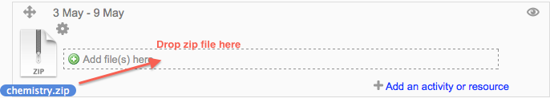
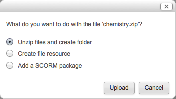
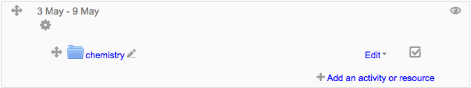
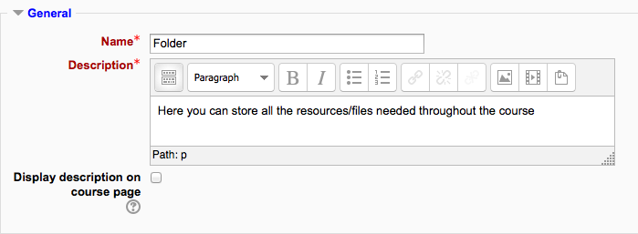
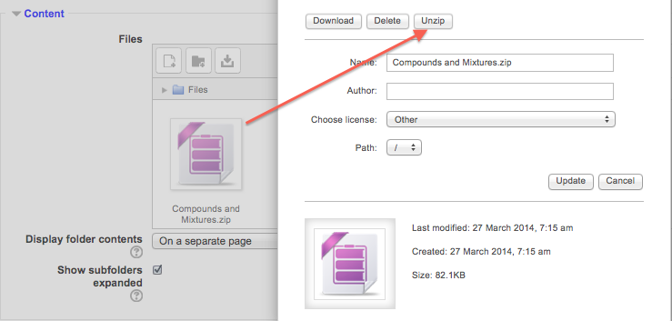
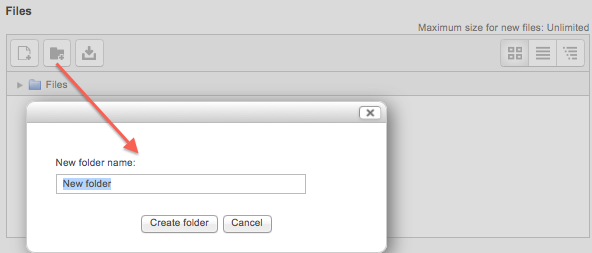
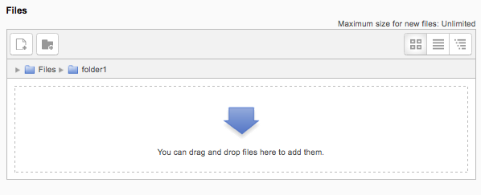
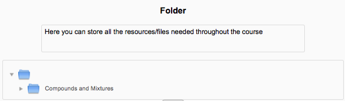
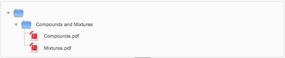

A folder allows a teacher to display several course resources together. The resources may be of different types and they may be uploaded in one go, as a zipped folder which is then unzipped, or they may be added one at a time to an empty folder on the course page.
Using a folder to display resources is neater than displaying files one by one in a list. It takes up less space on the course page.
The downside is that at present you are forced to download files stored in a folder resource. You cannot have (for example) a folder of pictures where the user can view the pictures in Moodle without a download.
Note: Folders you wish to upload to Moodle have to be “zipped” or “compressed” first. The way you do this depends on your computer and operating system.
If you already have a folder of files you would like to display, there are two methods:

- Click the ‘Turn editing on’ button at the top right of the course page
- Drag and drop the folder onto the course section where you’d like it to appear
- Click the button of the action you would like to take with the folder (in our case, “Unzip”) and click “Upload”
- If necessary, edit the title of the folder by clicking the pencil icon
Drag and drop folder
Uploading the folder
Folder created

- Click the ‘Turn editing on’ button at the top right of the course page
- `Click ‘Add an activity or resource’ link, then in the activity chooser; select folder then click the “Add” button (or select folder from the “Add a resource” dropdown menu) All settings may expanded by clicking the “Expand all” link top right.
- For General, add name and a description (which may be required or optional according to the admin settings)Click “Show editing tools” to display the rich text editor and drag the bottom right of the text box out to expand it. Enabling ‘Display description on course page’ will show it just below the link to the folder.
General settings

- For Content, either drag and drop a zipped/compressed folder into the box with an arrow or click the Add button to open the File picker menu in order to choose a file from your computer or a repository.
- When the folder thumbnail appears, click on it and select “Unzip”:
Unzipping a folder
- Click the original (zipped) folder and click the “Delete” button to delete it if you wish
- Select how you want to display your folder contents, your Common module settings and, if enabled, Conditional activities and Activity completion and click “Save and return to course”
- Click the button ‘Save and return to course’ at the bottom of the page.
Use this method if you want to create a folder on your Moodle course and then upload files into it.

- Click the ‘Turn editing on’ button at the top right of the course page
- Click ‘Add an activity or resource’ link, then in the activity chooser; select folder then click the “Add” button (or select folder from the “Add a resource” dropdown menu).
- Enter a name and a description (which may be required or optional according to the admin settings)
- Click the “Create folder” link as below; choose a name for your new folder and then click “Create folder”.
- Click INTO the folder
- You can then add individual files into the folder either by dragging and dropping into the box or clicking the “Add” to upload files from the File picker.
- Choose how you want to display your folder contents, your Common module settings and, if enabled, Conditional activities.
- Click “Save and return to course” .
Creating a folder
Adding files to a folder
Decide here whether to have the folder displayed on a separate page (the default) or inline with or without subfolders expanded or collapsed.
Folder displayed inline
Folder displayed inline with subfolders expanded
- View folder content
- Manage files in folder module
- Add new folder